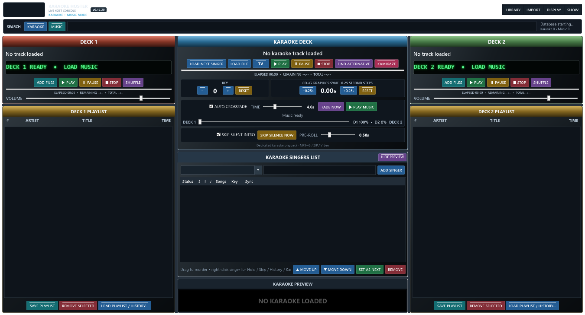

Singer rotation
Add requests, drag the order, hold, skip once, set next and reopen full singer history.
WINDOWS LIVE SHOW CONSOLE
One dependable console for singer rotation, CD+G and video karaoke, flexible interval music and a dedicated audience screen.

EVERYTHING THE HOST NEEDS
Search, queue, play and recover without covering the controls you need next.
Add requests, drag the order, hold, skip once, set next and reopen full singer history.
Play ZIP, CD+G pairs and video karaoke with saved key and quarter-second lyric sync.
Use two crossfading decks, or make Deck 2 a side holding list that feeds Deck 1 by drag and drop.
Search large karaoke and music catalogues while keeping the live decks visible for drag and drop.
Read common hoster and DJ databases, playlists and singer-history exports without changing the source.
Autosave rotation and queues, confirm shutdown, mark broken files and restore interrupted shows.
YOUR FIRST SHOW
Add karaoke and optional music folders. Hazz indexes and watches them.
Type a name and drag each Karaoke search result onto that singer.
Press TV to send the audience output full screen to the second display.
Load Next Singer, verify the request and press the green Play button.
FAST PREVIOUS-SINGER SEARCH
The singer picker opens with about 100 recent names. Type any part of a name to search the full database asynchronously. Results are capped and virtualised so the host controls stay responsive.
AUDIENCE DISPLAY
Choose a display explicitly or use the protected TV button for Display 2. Set the next-singer list, scrolling rotation, venue message and persistent logo.
MIGRATE YOUR OLD DATA
Smart Import detects common karaoke-hosting and DJ software. Preview the mapping first; Hazz opens the original data read-only.
COMPLETE DOCUMENTATION
The shortest safe route from opening Hazz to playing your first singer.
Read onlineEvery main workflow, import, display option, recovery feature and troubleshooting route.
Read onlineComplete C# WPF source, tests, release project and one-EXE build instructions.
View downloadsREADY FOR THE NEXT SINGER
Windows x64, self-contained and supplied as one executable.